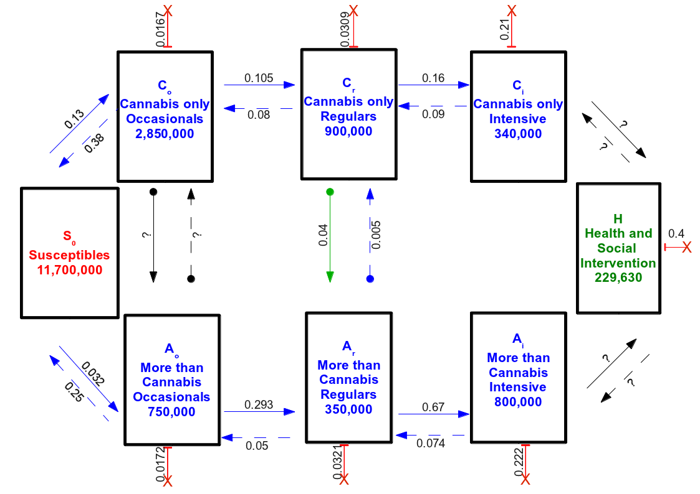
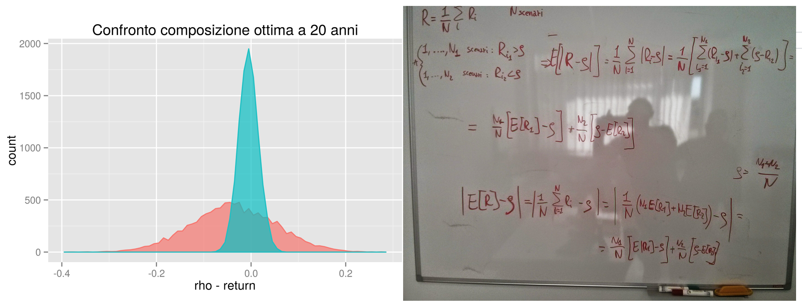
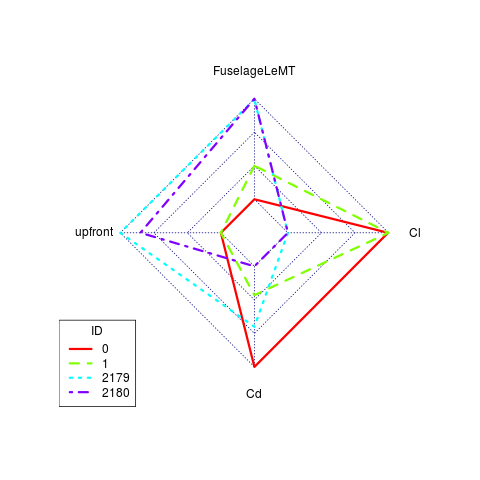
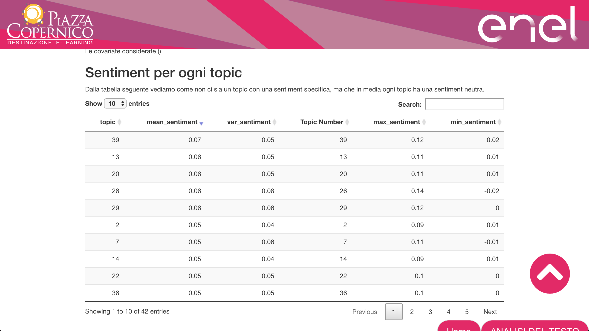
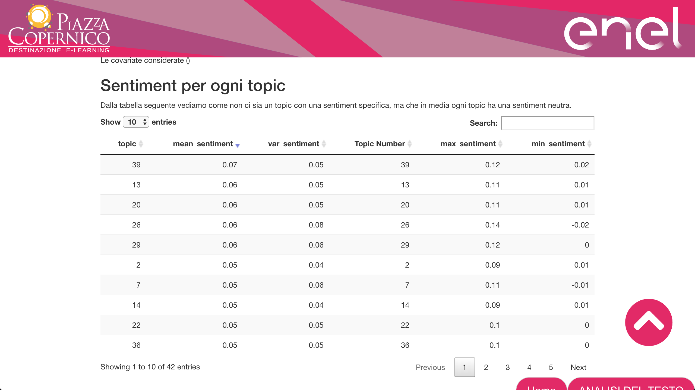

Mario Santoro Research Lines: Past, Present and Future
Mario Santoro
Presentation for the interview of the CNR’s concourse 366.64 - Prot. AMMCEN n. 0053431
COMPETING HIV STRAINS AND IMMUNE SYSTEM RESPONSE (2005-2009 until 2011)
A “predator-predator” model \(->\) The birth rates of both increase with the density of the other
Rich dynamics from the asymmetry in the behavior \(->\) Virus prey on globally while immune systems prey on specific strain
For a particular set of parameters, peaks of virus density appear in some cases as a consequence of a too high virus replication rate \(->\) reminding of the clinically observed blips as a consequence of instability
For details \(->\) arXiv:1101.2851 [q-bio.QM]

A compartmental model of drug users (2006-2007)
A six-typology compartment model of trends in use of illicit drugs in Italy \(->\) to evaluate policies and interventions through scenario analyses.
Inside the big compartments of just-cannabis users and multiple-drug users three users subpopulation: occasional, regular, intensive
- Compartments for health care/assisted persons together with a constant source (susceptible) are added

 
Early steps as IAC research fellow (2014-2015)
Toy-model with exact analytical solution to evaluate the cost function of Unicredit Asset Liability Management Model and proposal of new one with better convergence
Creation and implementation of TH.E.SYS, THREAT EVALUATION SYSTEM, evaluation procedure of the state risk for a private corporation. TH.E.SYS is a a composite index from multiple etherogenous sources. I can’t say more than that…
 
Early steps as IAC research fellow (2014-2015)
Some scripts for generating graphs and analisys of simulations in the application developed for the project RBF4AERO

Toy model (Hull-White) with exact analitycal solution in order to benchmark the model and the simulation of Credit Value Adjustment developed for Italian Ministery of Finance and Economics (SAPE model) 
Sentiment E-STM
- In collaboration with Piazza Copernico Sentiment E-STM was applied to employee satisfaction survey of italian division of ENEL S.p.A.
 
